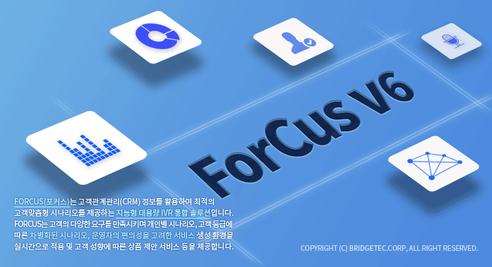

| ForCusStudio 개요 | 시작 다음 이전 |
|
ForCusStudio는 SCE(Service Creation Environment)이며, ForCus의 서비스 시나리오를 제작하기 위한 Windows 기반 GUI 툴입니다. 이를 이용하여 콜센터 시스템의 IVR서비스를 개발합니다. ForCusStudio에서는 ForCus기반의 시스템 상에 음성보드의 상세 스팩에 구애 받지 않고 서비스를 제작 할 수 있는 제작환경을 제공하고 있습니다.

서비스 개발
ForCusStudio는 서비스 컴포넌트 아이템을 시나리오 캔버스상의 빈 공간에 서비스 흐름에(Flowcharts) 따라 배치하여 IVR서비스를 구축하기 위한 개발 환경입니다. ForCusStudio에는 IVR서비스를 개발하기 위해 필요한 논리를 모두 포함한 아이템들이 있는데, Telephony, Flow, DLL, Database, Log, Event등의 아이템 그룹을 제공합니다.
컴파일
개발된 시나리오가 실제 IVR서버에서 구동되기 위해서는 IVR서버(SLEE)에 시나리오를 전달하여야 하는데, 이 둘 사이의 인터페이스는 SXML(XML)이라는 스크립트로 처리가 됩니다. 그래서, ForCusStudio에서는 컴파일이라는 과정을 통해서 개발된 시나리오가 제대로 작성되었는지 검증하고, 그 결과를 SXML(XML) 스크립트로 출력하게 됩니다.
시뮬레이션
컴파일이 완료되면 개발된 시나리오를 테스트 할 수 있는 Visual Debugging이라는 기능을 제공하여 시나리오를 시뮬레이션 할 수 있습니다.
|
| Copyrights(C) Bridgetec.co.kr. All Rights Reserved | 시작 다음 이전 |